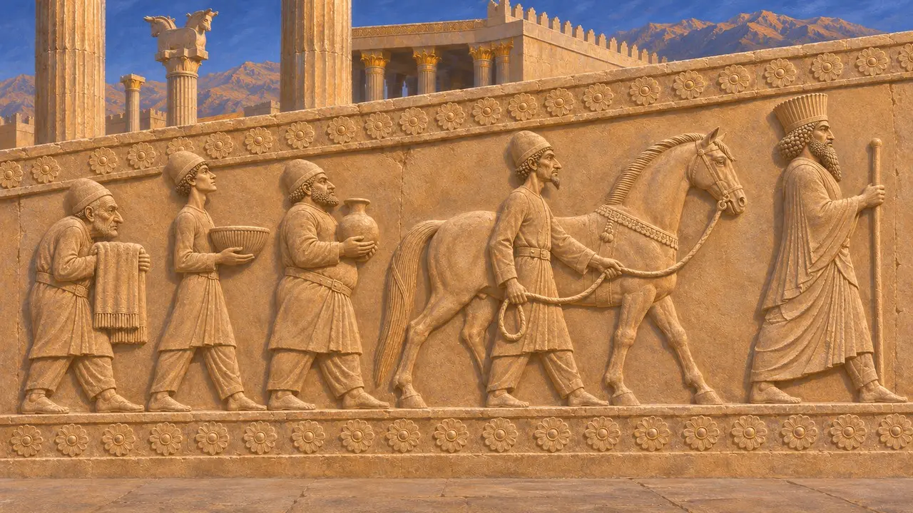
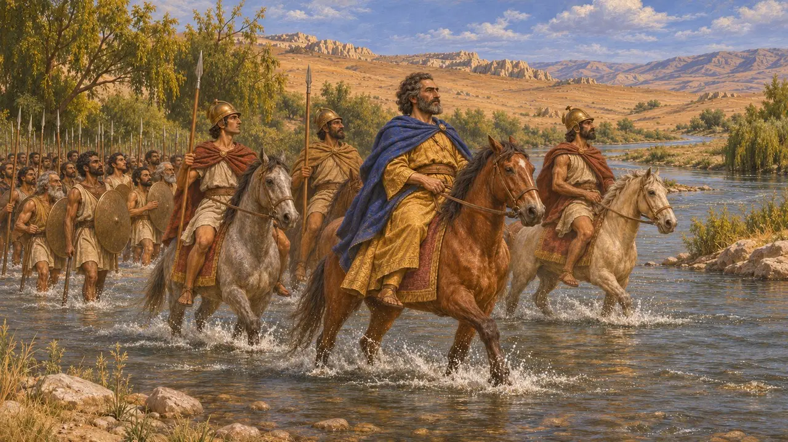
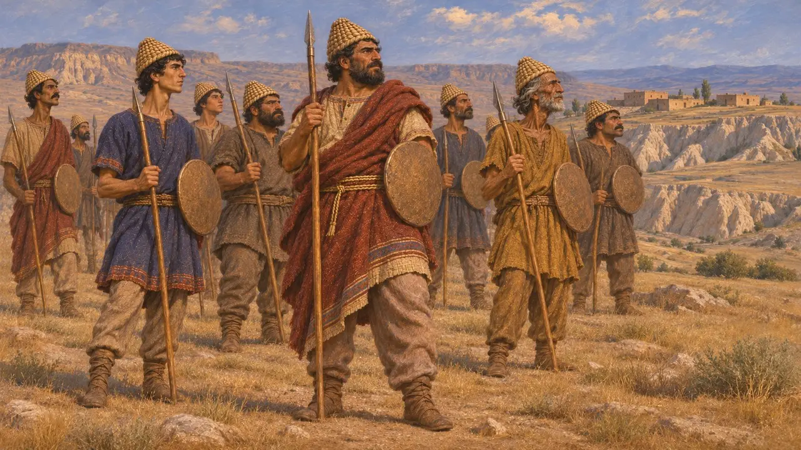
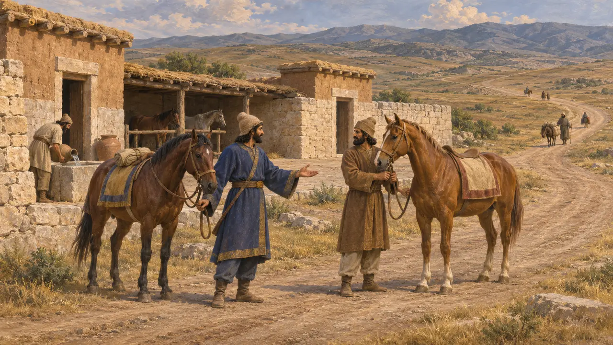
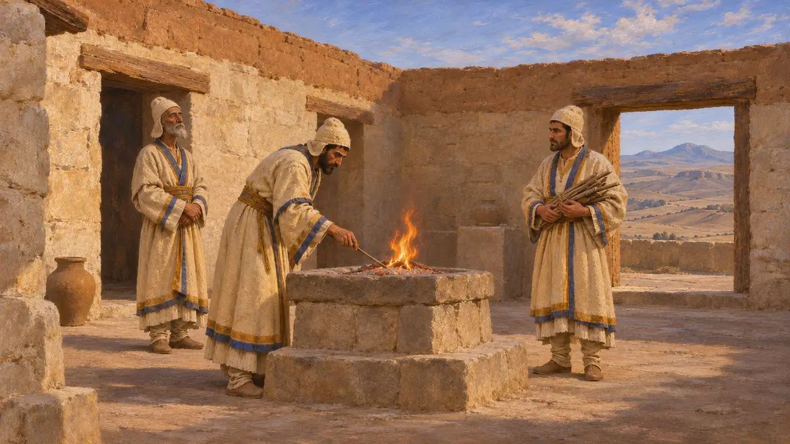

Cappadocia
The high plateau of central Anatolia east of the Halys, Katpatuka in Darius's list of lands
Cappadocia was the high plateau of central Anatolia east of the Halys river, called Katpatuka in Darius's inscriptions. Herodotus says the Greeks called its people Syrians. It lay between Lydia and Armenia on the road from Sardis to Susa, and it came into Persian hands when Cyrus beat Croesus in the 540s BCE.
No jogo: Cappadocia is named in the Chronicle's sources, in the lists of lands from the Behistun inscription and the Persepolis texts, and among the nations. It is not a level and has no mechanic of its own.

In the King's lists
Nos registrosKatpatuka appears among the lands Darius names at Behistun, and again in his lists at Persepolis and on his tomb at Naqsh-e Rostam, next to Armenia and Sparda (Sardis). Its delegates are among the tribute bearers carved on the stairs of the Apadana, though which group is theirs is argued.
DB §6; DPe; DNa

Where Croesus crossed the Halys
Relato antigoHerodotus says Croesus crossed the Halys into Cappadocia to attack Cyrus, took the city of Pteria and enslaved its people. The two kings fought an indecisive battle there before Croesus went home to Sardis, where Cyrus followed and took the city.
Herodotus 1.72-80

The Syrians of the plateau
Relato antigoHerodotus says the Cappadocians were called Syrians by the Greeks, and that before the Persians they had been subject to the Medes. In Xerxes' army, he says, they were equipped like the Paphlagonians, with plaited helmets, small shields and short spears.
Herodotus 1.72, 7.72

The Royal Road across it
Relato antigoHerodotus traces the Royal Road from Sardis across the Halys and through Cappadocia to the border of Cilicia, with its posting stations and inns. The exact line through the plateau is argued; some scholars run it further north, through Pteria, others further south.
Herodotus 5.52

Fire temples seen later
DisputadoStrabo, writing about 500 years later, says he saw magi in Cappadocia tending fires that never went out in enclosed sanctuaries. That was the practice of his own day. It should not be read back to the reign of Darius without other evidence.
Strabo 15.3.15
Fontes
- DB §6
- DPe
- DNa
- Herodotus 1.72-80
- Herodotus 5.52
- Herodotus 7.72
- Strabo 15.3.15
- P. Briant, From Cyrus to Alexander, 2002